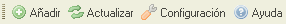

Barra de Herramientas
La barra de herramientas, es un área dedicada situada al inicio de la interface de CKFinder. Contiene una serie de botones a los que se puede dar click para ejecutar rápidamente funciones específicas. Este es un screenshot de esta barra:

Botones de la barra de herramientas
La siguiente, es una lista de los botones que están disponibles en una barra de herramientas estandar:
- Subir: Abre el "Panél de Subida ", que puede ser usado para agregar nuevos archivos a la carpeta actual.
- Recargar: Recarga la lista de archivos en el Pánel de Archivos.
- Ajustes: Abre el "Pánel de Ajustes", en donde podrá configurar y personalizar CKFinder.
- Ayuda: Abrirá esta Guía del Usuario.